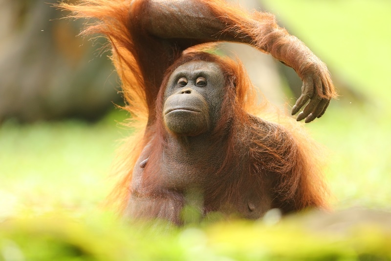

ORANG UTAN
Orang utan merupakan satu-satunya spesies kera besar yang habitat aslinya terdapat di Asia dan hanya dapat ditemui secara liar di hutan Kalimantan dan Sumatra. Hal ini mengindikasikan bahwa Indonesia, sebagai negara yang sebagian hutannya dihuni oleh orang utan, memiliki tanggung jawab besar dalam menjaga kelestarian satwa tersebut. Apalagi orang utan merupakan satwa yang dilindungi oleh hukum internasional dan nasional karena posisinya semakin terancam dan mendekati kepunahan dari tahun ke tahun. Status konservasi orangutan baru mendapat perhatian internasional pada tahun 1960- an. Program rehabilitasi dan reintroduksi juga baru dimulai pada periode tersebut ketika populasi orang utan liar diprediksi berada di ambang kepunahan.

Klasifikasi
kingdom : Animalia
Phylum : Chordata
Kelas : Mammalia
Ordo : Primates
Famili : Hominidae
Genus : Pongo
Spesies : Pongo pygmaeus
MORFOLOGI
Dilihat dari morfologi, Orangutan Kalimantan memiliki warna rambut yang lebih gelap dan tubuh yang lebih besar dibanding Orangutan Sumatera. Tingkah laku Orangutan Kalimantan di alam yaitu bergerak lebih lambat dan sering melakukan aktifitas turun dari pohon dan menginjak tanah. Orangutan Borneo adalah bagian dari keluarga besar kera dan merupakan mamalia arboreal terbesar. Satwa ini memiliki rambut panjang dan kusut berwarna merah gelap kecoklatan, dengan warna pada bagian wajah mulai dari merah muda, merah, hingga hitam. Berat orangutan Borneo jantan dewasa bisa mencapai 50 hingga 90 kg dan tinggi badan 1,25 hingga 1,5 m. Sementara betina dewasa memiliki berat 30 – 50 kg dan tinggi 1 m. Bagian tubuh seperti lengan yang panjang tidak hanya berfungsi untuk meraih makanan seperti buah-buahan, tetapi juga untuk berayun dari satu pohon ke pohon lainnya, menggunakan jangkauan dan kaki untuk pegangan yang kuat. Pelipis seperti bantal yang dimiliki oleh orangutan Borneo jantan dewasa membuat wajah satwa ini terlihat lebih besar. Akan tetapi, tidak semua orangutan Borneo jantan dewasa memiliki pelipis seperti bantal. Jakun yang dimiliki dapat digelembungkan untuk menghasilkan suara keras, yang digunakan untuk memanggil dan memberitahu keberadaan mereka.Habitat
Orangutan Borneo lebih banyak ditemukan di hutan dataran rendah (di bawah 500 m diatas permukaan laut) dibandingkan di dataran tinggi. Hutan dan lahan gambut merupakan pusat dari daerah jelajah orangutan, karena lebih banyak menghasilkan tanaman berbuah besar dibandingkan dengan hutan Dipterocarpaceae yang kering dan banyak mempunyai pohon-pohon tinggi berkayu besar, seperti keruing. Orangutan borneo sangat rentan dengan gangguan-gangguan di habitatnya.Sebaran
Orangutan merupakan satu-satunya kera besar yang hidup di Asia, kera besar lainnya yaitu gorilla, simpanse dan bonodo ditemukan di wilayah Afrika . Total populasinya 90% berada di wilayah Indonesia, yaitu hanya dapat ditemukan di Borneo (Kalimantan) dan di bagian utara Sumatera. Padahal menurut catatan fosil para ahli, Orangutan hingga akhir Pleistone dapat ditemukan di sebagian besar hutan dataran rendah di Asia Tenggara, dari kaki perbukitan Wuliang Shan di Yunan, Cina Selatan, sampai ke selatan Pulau Jawa, dengan luas sebaran total yakni 1,5 juta km² Orangutan Kalimantan (Pongo pygmaeus) dan Orangutan Sumatera (Pongo abelii) terpisah secara geografis paling sedikit sejak 10.000 tahun yang lalu, saat tejadi kenaikan permukaan air laut antar kedua pulau itu.

Status Konservasi
Semua sub-spesies orangutan Borneo adalah spesies langka dan sepenuhnya dilindungi oleh perundang-undangan Indonesia. Spesies ini diklasifikasikan oleh CITES ke dalam kategori Appendix I (species yang dilarang untuk diperdagangkan secara komersial karena sangat rentan terhadap kepunahan). Beberapa ancaman utama yang dihadapi oleh orangutan Borneo adalah kehilangan habitat, pembalakan liar, kebakaran hutan, perburuan dan perdagangan orangutan untuk menjadi satwa peliharaan. Dalam satu dekade terakhir, di tiap tahunnya, paling tidak terdapat 1,2 juta ha kawasan hutan di Indonesia telah digunakan sebagai kawasan penebangan berskala besar, pembalakan liar, serta konversi hutan untuk pertanian, perkebunan, pertambangan, dan pemukiman. Kebakaran hutan yang disebabkan oleh fenomena iklim seperti badai El Nino dan musim kering yang berkepanjangan juga mengakibatkan berkurangnya populasi orangutan. Selama 20 tahun terakhir, habitat orangutan Borneo berkurang paling tidak sekitar 55 %.
Populasi orangutan yang berkurang 25 ekor setiap hari, hal ini sangat mengkhawatirkan. Praktik deforestasi untuk membuka lahan perkebunan kelapa sawit merupakan salah satu penyebab utama dari penurunan jumlah orangutan dan kerusakan habitat mereka di beberapa wilayah di Asia Tenggara, termasuk di Indonesia dan Malaysia. Upaya konservasi dan perlindungan habitat alami orangutan menjadi sangat penting untuk menghentikan penurunan populasi mereka. Beberapa langkah yang dapat diambil untuk melindungi orangutan dan hutan hujan di mana mereka tinggal antara lain:
1. Konservasi hutan
2. Kebijakan dan huum untuk melindungi habitat orangutan
3. Edukasi dan kampanye kesadaran konservasi kepada mesyarakat
Fakta Unik Orang Utan
1. Kata orang utan berasal dari bahasa Melayu; ‘Orang’ berarti manusia dan ‘utan’ berasal dari ‘hutan’ yang berarti hutan, jadi kata orang utan secara harfiah berarti ‘manusia dari hutan’.2. Orangutan memang bukan masuk dalam kategori monyet. Mereka termasuk dalam keluarga kera besar atau yang dalam bahasa Inggris disebut "great ape" yang juga meliputi gorila, simpanse, dan bonobo. Keluarga primata yang termasuk dalam kelompok monyet disebut "monkey".
3. Orangutan adalah hewan yang sangat suka tidur dan memiliki kebiasaan tidur yang unik. Mereka cenderung tidur di atas pohon untuk menghindari predator dan juga untuk mencari makanan yang lebih mudah di pohon-pohon. Meskipun mereka bisa tidur malam panjang dari senja hingga fajar, mereka juga tidur siang di sela-sela aktivitas siang mereka.
4. Kekuatan Fisik: Orangutan memang memiliki kekuatan yang sangat besar. Diperkirakan kekuatan otot mereka mencapai sekitar enam kali lipat dari kekuatan manusia dewasa. Kekuatan ini memungkinkan mereka untuk bergerak dengan mudah di pepohonan dan mengangkat benda-benda yang jauh lebih berat daripada yang dapat diangkat manusia
5. Orangutan adalah primata yang sangat cerdas dan dapat menggunakan alat. Mereka dapat menggunakan daun sebagai payung, membuka buah dengan tongkat, dan menggunakan benda-benda lain sebagai alat untuk mencari makanan.